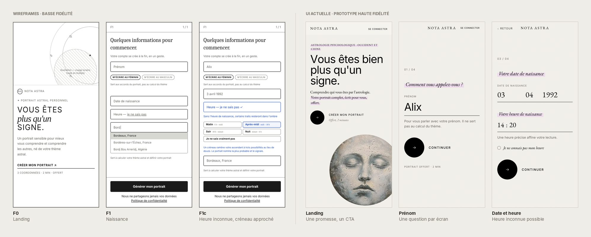
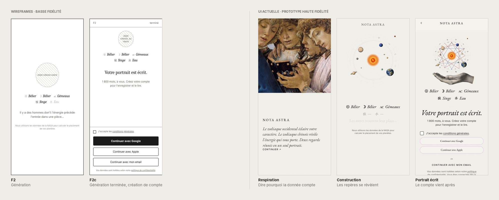
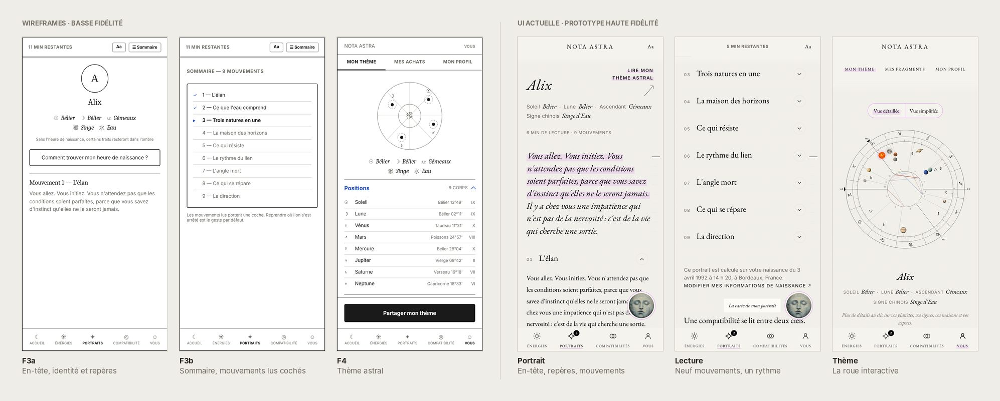
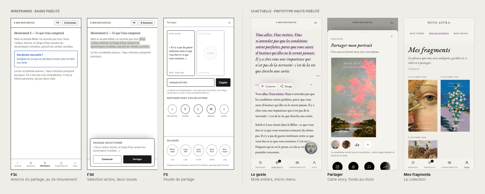
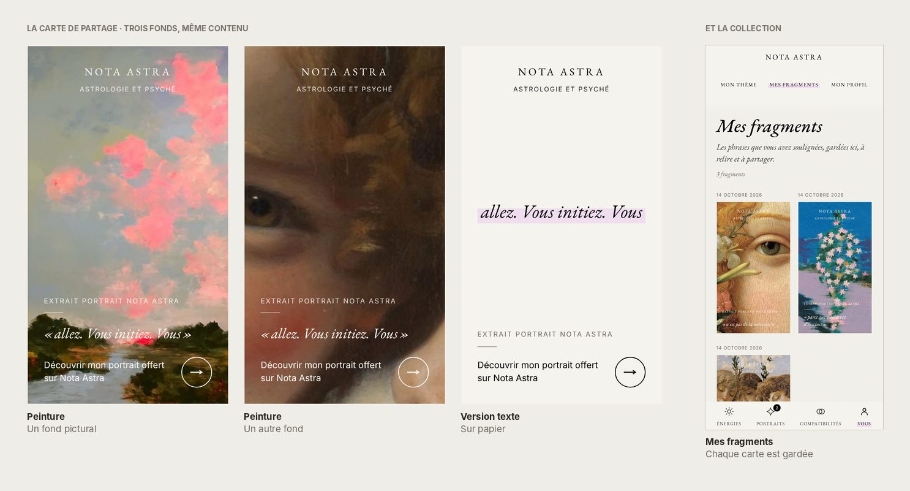
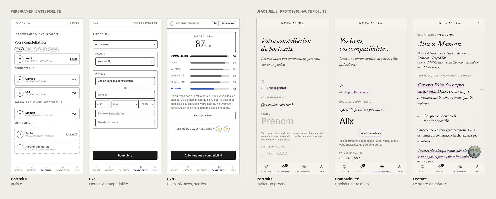
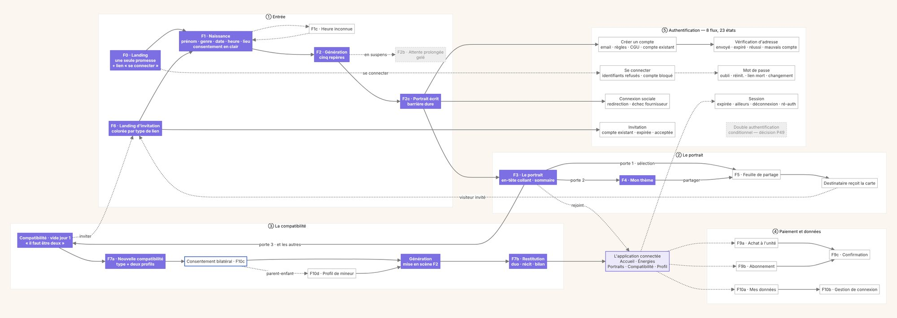
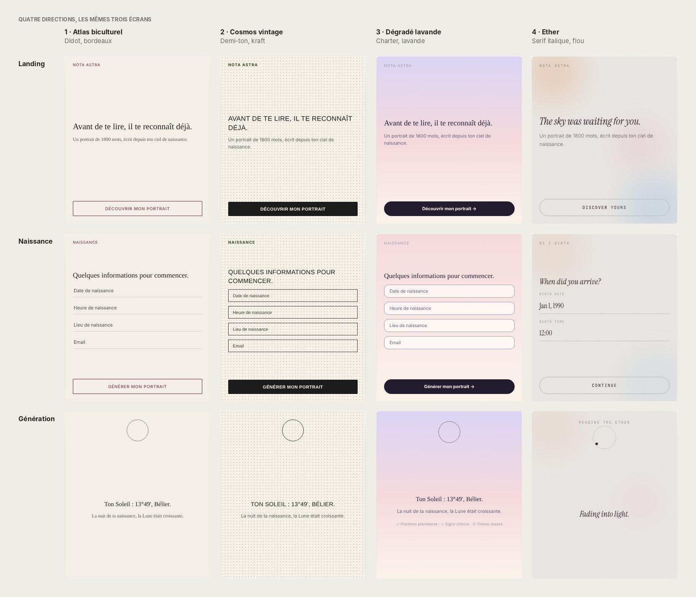
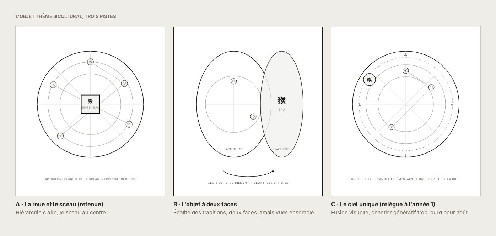
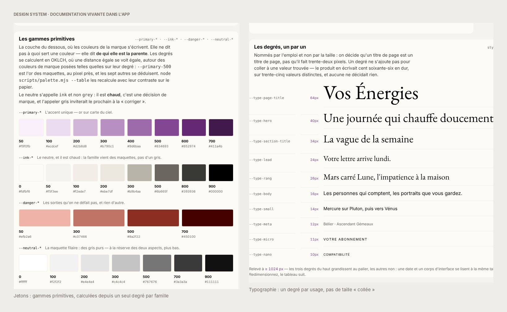

Nota Astra est une web app de bien-être et de connaissance de soi, par l'astrologie, occidentale et chinoise. On y entre en douceur, on se découvre à travers un portrait écrit pour soi, puis on va vers les autres : inviter un proche, comparer son portrait au sien, garder et partager ce qui nous touche. Une mission de conception de bout en bout, du cadrage au prototype cliquable, menée en direct avec la fondatrice.
Nota Astra
Startup, lancement visé
en novembre 2026
Product Designer Senior
(cadrage, UX, UI, Design System,
prototype front)
Août - octobre 2026
Cinq sprints, du cadrage
au prototype
Scope, flows, 65 cadres de wireframes,
hi-fi, design system,
prototype (47 routes)
Le principe : ne jamais demander avant d'avoir donné. Chaque temps prépare le suivant. À gauche, le wireframe qui a servi à décider ; à droite, l'UI actuelle du prototype.
La landing dit en une phrase en quoi le produit peut aider, avec un seul appel à l'action. Le formulaire ne ressemble pas à un formulaire : quatre questions, une par écran, un champ à la fois. L'heure de naissance inconnue reste une précision (« je ne connais pas mon heure »), jamais un blocage. Aucun raccourci de géolocalisation : la position actuelle n'est presque jamais le lieu de naissance.

Entrée : une promesse, puis une question à la fois.
Entre les questions, un écran de respiration dit pourquoi la donnée compte, puis la construction du thème met en scène l'attente : repères révélés un à un, un fait astronomique réel, ni pourcentage ni chronomètre. Le portrait est annoncé écrit avant de demander un compte : la création de compte vient quand la personne sait pourquoi la créer.

Onboarding par la transparence : on explique, on construit, puis on demande.
Un portrait d'environ 1 600 à 1 900 mots, soit une dizaine de minutes, en neuf mouvements qu'on peut quitter et reprendre. Le thème occidental et le signe chinois partagent un seul objet : la roue, avec l'animal au centre. Le texte est le produit : la typographie, le rythme et l'absence de distraction se décident avant les composants.

Le portrait : repères, neuf mouvements, thème interactif.
Dans un produit de lecture, ce qui touche est la meilleure donnée, et ce qu'on a envie de montrer est la meilleure invitation. Le geste de sélection relie les deux.

Du wireframe « sélection, deux issues » au geste final : surlignage, micro-menu, carte, collection.
Le doigt glisse sur le texte et le surlignage s'aimante aux mots entiers, jamais plus grand qu'un paragraphe. Pour ne pas empêcher de défiler, le geste ne s'arme que sur un mouvement franchement horizontal ou un appui de 350 ms. Au relâcher, un micro-menu propose deux gestes : Conserver ou Partager.
La sélection native iOS et Android (loupe, copier-coller, tout sélectionner) se battrait avec le geste. Elle est coupée sur la zone de lecture, et le produit calcule lui-même le mot sous le doigt. Aucun message d'interdiction : la lectrice ne rencontre jamais un mur, seulement un geste plus beau que celui d'origine. Sur ordinateur, on laisse copier, et le texte copié devient une citation signée avec un lien.
Un passage ne reste que s'il est conservé : ce qui est surligné dans le texte est exactement ce que contient Mes fragments, rien n'est invisible ni orphelin. Chaque fragment renvoie à sa place dans le portrait, parce qu'une citation sans contexte ne se garde pas.
Chaque fragment devient une carte au format story 9:16, avec un fond au choix (deux peintures, une version texte sur papier, ou sa propre photo). Elle se partage en story, par message, en lien ou s'enregistre, et elle ouvre une invitation vers Nota Astra : chaque partage est une porte d'entrée. Les cartes gardées forment une collection personnelle, à relire et à repartager. Une carte de compatibilité nomme l'autre personne par son initiale seule, parce qu'on partage un verdict, pas une personne.

La même phrase en trois fonds, puis la collection : on garde, on relit, on partage.
Le geste est aussi un instrument de mesure : quatre événements (passage posé, conservé, retiré, partagé) disent quels passages résonnent. Posé sans conservé est un signal en soi : la main s'est tendue vers ce passage sans le garder. L'analyse est agrégée et anonymisée dès la conception.
La fin du portrait ouvre une porte : inviter quelqu'un à lire le sien, jusqu'à trois invitations sans vérification. L'application s'organise en cinq onglets : énergies, portraits, compatibilités, vous. Une compatibilité se lit à deux, avec l'accord de l'autre personne, et son score arrive en clôture, jamais en ouverture, pour que le chiffre n'écrase pas le récit. Le verdict et le premier paragraphe se lisent avant de payer.

Portraits, compatibilités, lecture à deux : de la personne à la relation.
Cinq sprints, du cadrage au prototype. Pas d'entretiens utilisateurs : le produit n'existait pas encore. La discovery s'est faite avec la fondatrice, par benchmark et par hypothèses écrites, et je le dis comme tel.
Se mettre d'accord sur ce que le produit doit prouver avant de dessiner.
Sessions préparées avec la fondatrice (pistes avec pour et contre, risques à nommer, points à trancher). Revue croisée de la feuille de route : 17 points. Benchmark en six revues d'apps en production. Personas et parcours comme outils de travail sur hypothèses.
Quatre hypothèses (activation, boucle, valeur du lien, apprentissage), sept principes produit, cinq décisions à faire trancher. Des trous trouvés avant d'avoir dessiné un écran.
Dessiner le produit entier, puis décider ce qui entre dans le lancement.
Scope en trois cercles (le MVP, les contenus, la rétention), estimations d'ingénierie par fonctionnalité, sitemap à sept zones, flow complet de l'entrée à la compatibilité.
Un flow unique maintenu à jour : compte créé après le portrait, application à cinq onglets, 8 flux d'authentification et 23 états. La piste la plus ambitieuse de l'objet thème repoussée à l'année 1.

Flow consolidé, version du 2 septembre. Violet : chemin de la démonstration, pointillé : boucle ou paiement, cadre bleu : consentement.
Comparer avant de choisir, sur pièces, avec la fondatrice.
65 cadres de wireframes en basse fidélité, annotés. Quatre directions visuelles sur les mêmes trois écrans. Trois pistes pour l'objet thème.
Une direction papier et encre avec un seul accent violet, et la roue avec le sceau comme objet thème. Une famille typographique écartée pour une question de licence.

Atlas biculturel, Cosmos vintage, dégradé lavande, Ether : mêmes contenus, quatre systèmes.

La roue et le sceau, l'objet à deux faces, le ciel unique.
Passer à la haute fidélité sans perdre la cohérence.
Hi-fi des écrans clés, design system par jetons, documentation vivante dans l'app. Prototype et règles écrites pour que l'IA, comme l'équipe, produise vite sans dériver.
Des jetons sans valeur en dur, des contrôles automatiques qui cassent le build, trois familles de composants. Le design system est la source de vérité du rendu de l'app.

La documentation vivante du design system, dans l'app.
Un prototype cliquable de bout en bout, instrumenté.
Prototype Next.js, React et TypeScript conçu et codé avec des outils d'IA, dont Claude Code : 47 routes, de l'entrée au paiement, sans backend. Plan de mesure : coefficient viral, cohorte de 14 jours, intervalles de Wilson.
26 événements de mesure typés. Aucune donnée d'usage encore : le parcours a été rejoué, pas mesuré, et c'est ce qui est écrit dans la spec.
Le prototype cliquable est livré, le lancement est visé pour novembre 2026. Aucune donnée d'usage n'existe encore : le prototype embarque un plan de mesure pour prouver les hypothèses dès le premier jour.
Dans un produit de lecture, la typographie, le rythme et l'absence de distraction font partie de la proposition de valeur. Ils se décident avant les composants.
Couper la sélection native pour la remplacer par un geste de lecteur a demandé plus de travail que n'importe quel écran, et c'est ce qui rend le produit mémorable.
Un design system ne se maintient pas par bonne volonté. Des règles écrites et des contrôles automatiques gardent la cohérence quand l'équipe, ou l'IA, produit vite.